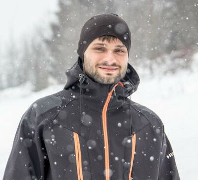
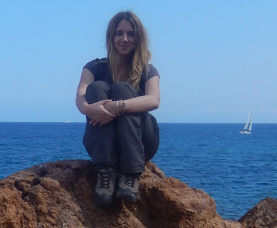
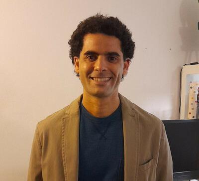
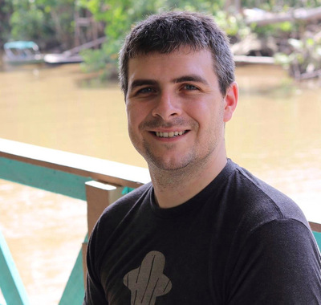
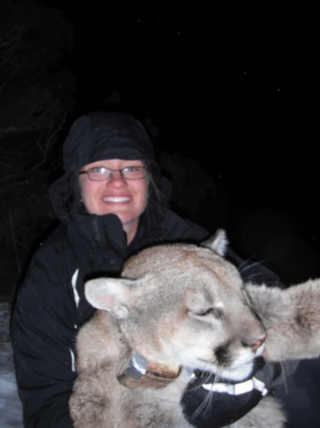
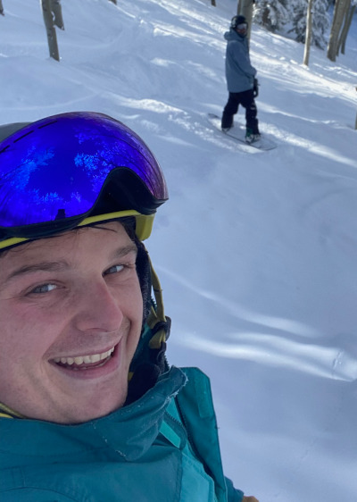

Spatial Ecology’s 2022 course
Geocomputation and Machine Learning for environmental applications
Student affiliation and their origin
Student roster
(1) Gulnihal Kurt (Turkey)
Cukurova University, Adana, Turkey
(2) Janusz Godziek (Poland)
Institute of Earth Sciences; University of Silesia, Poland.

(3) Rosa Colacicco (Italy)
Department of Earth and Environmental Sciences; Bari University, Italy.

(4) Sebastian Walter (Germany)
Department of Earth Sciences, Institute of Geological Sciences, Freie Universität Berlin, Germany
(5) Eric Kumah-Baku (Ghana)
(6) Gidske Andersen (Norway)
Department of Geography, Uuniversity of Bergen, Norway
(7) Txomin Bornaetxea (Spain)
Department of Geography, Prehistory and archaeology; University of the Basque Country (UPV/EHU), Spain.

(8) Sebastian Munoz (USA)
Department of Geological Sciences; Brown University, USA

(9) Myriam Marending (Denmark)
Copenhagen Business School
(10) Vincent Lecours (Canada)
School of Forest, Fisheries, & Geomatics Sciences, University of Florida, USA.

(11) Lauren Satterfield (USA)
School of Environmental and Forest Sciences, University of Washington, USA.

(12) Hyeyoung Sim (South Korea)
Seoul National University, South Korea.
(13) Hemalatha Velappan (India)
School of Environmental and Forest Sciences, University of Washington, USA.
(14) Ritwika Mukhopadhyay (India)
Swedish University of Agricultural Sciences, Sweden.
(15) Yusdiel Torres-Cambas (Cuba)
Leibniz Institute of Freshwater Ecology and Inland Fisheries, Germany
(16) Maria Üblacker (Austria)
Leibniz Institute of Freshwater Ecology and Inland Fisheries, Berlin, Germany
(17) Afroditi Grigoropoulou (Grace)
Leibniz Institute of Freshwater Ecology and Inland Fisheries, Berlin, Germany
(18) Jaime Ricardo García Márquez (Colombia)
Leibniz Institute of Freshwater Ecology and Inland Fisheries, Berlin, Germany
(19) Erin Stearns (USA)
EpiMap (https://www.epimap.org/), USA
(20) Ahmad Shah Frahmand (Afganistan)
Yildiz Technical University, Istanbul, Turkey
(21) James Hannon (USA)
Western Connecticut State University, United States
(22) Bethany Wilkins (UK)
The James Hutton Institute, Scotland
(23) Hamidreza Rabiei Dastjerdi
University College Dublin, Irland.
(24) Yuang Chen (China)
Peking University, China
(25) Alonso Gonzalez (México)
México
(26) Matt Hallas (USA)
DevGlobal, USA
